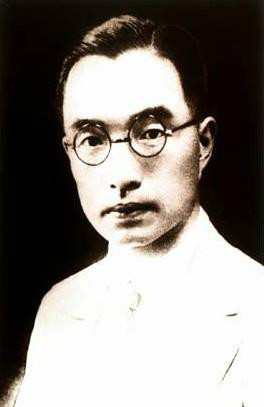

朱自清（1898.11.22-----1948.8.12），原名自华、号秋实，改名自清，字佩弦，生于江苏东海，长大于江苏扬州，故自称“我是扬州人”；现代着名散文家、诗人、学者、民主战士。其散文朴素缜密、清隽沉郁、语言冼炼、文笔清丽、极富有真情实感。朱自清以独特的美文艺术风格，为中国现代散文增添了瑰丽的色彩，为建立中国现代散文全新的审美特征创造了具有中国民族特色的散文体制和风格；主要散文集有《匆匆》 《春》 《欧游杂记》《你我》《绿》《背影》《荷塘月色》 等，着有诗集《雪朝》（与人合着），诗文集《踪迹》，文艺论着《诗言志辨》，《论雅俗共赏》等。《春》以被选入2012年新编初中语文教材中。

名字寓意：
朱自清原名朱自华，号秋实，取“春华秋实”之意。朱自清之名是他1917年报考北京大学时改用的，典出《楚辞·卜居》“宁廉洁正直以自清乎”——这是屈原被流放时请太子卜为自己占卦时说的话，意思是廉洁正直使自己保持清白。朱自清选“自清”作为自己的名字，其意是勉励自己在困境中不丧志，不同流合污，保持清白。他同时还取字“佩弦”。“佩弦”出自《韩非子·观行》“董安于之性缓，故佩弦以自急”，意为弓弦常紧张，性缓者佩弦以自警。